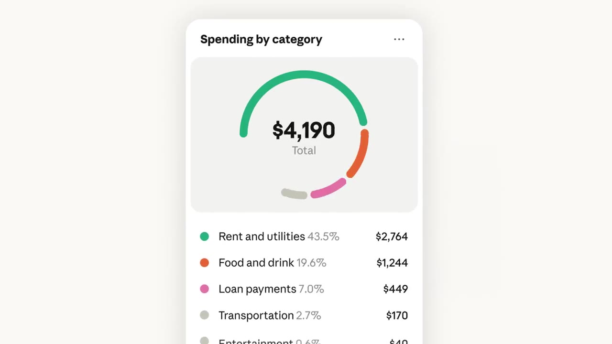

Introducing Personal Finance in Claude
▶ 원본 영상 보기⚠️ 자막을 받지 못해 영상 설명만으로 정리했습니다. (자막에는 음악·효과음뿐이라 말한 내용이 없습니다.)
한눈에 보기
- Claude에 금융 계정을 연결하면 지출, 청구서, 잔액을 이해하기 쉽게 설명해 준다.
- 평소 물어보기 불편했던 돈 관련 질문에 명확한 답을 주는 것을 내세운다.
- Claude의 접근 권한은 읽기 전용이다.
- 연결할 계정은 사용자가 고르고, 언제든 연결을 해제할 수 있다.
- 베타로 미국의 Pro, Max, Ultra 요금제부터 순차 제공된다.
이런 분께 도움이 됩니다
- 가계 지출이나 청구서를 정리하고 싶지만 어디서부터 볼지 막막한 분
- 미국 Pro, Max, Ultra 요금제 사용자로, 출시 범위와 안전장치(읽기 전용, 계정 선택, 연결 해제)를 미리 확인하고 싶은 분
핵심 내용
무엇을 하는 기능인가
- Claude Personal Finance는 연결한 계정을 바탕으로 지출, 청구서, 잔액을 설명해 주는 기능이다.
- 영상 설명은 "묻기 어색했던 돈 질문에 명확한 답"을 얻는 것이 목적이라고 소개한다.
- 구체적인 질문 예시나 화면 구성은 영상 설명에 없다. 자막도 없어 확인할 수 없다.

안전장치
- Claude의 접근은 읽기 전용이다.
- 어떤 계정을 연결할지는 사용자가 직접 고른다.
- 연결은 언제든 해제할 수 있다.
💡 계정을 연결하더라도 Claude가 바꿀 수 있는 것은 없고, 연결 범위와 해제는 사용자가 정한다.
제공 범위
| 항목 | 내용 |
|---|---|
| 상태 | 베타 |
| 대상 요금제 | Pro, Max, Ultra |
| 지역 | 미국 |
| 방식 | 점진적 출시 |
- 한국에서 쓸 수 있는지는 영상 설명에 나오지 않는다.
- 상세 안내는 설명란의 공식 글(claude.com/resources/articles/introducing-personal-finance-in-claude)에 있다.
기억할 숫자·인용
- "읽기 전용(read-only)", "계정은 사용자가 선택", "언제든 연결 해제"
- 베타, 미국 Pro·Max·Ultra 요금제 대상으로 점진적 출시
생각해볼 점
- 영상 설명만으로는 연동 가능한 금융기관, 답변의 정확도, 데이터 보관 방식을 알 수 없다. (내 의견) 연결 전에 공식 글에서 데이터 처리 방침을 확인하는 것이 좋다.
- 읽기 전용이어도 소비 내역은 민감한 정보이므로, 처음에는 일부 계정만 연결해 보는 방법도 있다.
- 재무 관련 답변은 참고용으로 보고, 큰 금융 결정은 공식 명세서나 전문가와 따로 확인해야 한다.
바로 해볼 일
- 설명란의 공식 안내 글을 읽고 내 요금제와 지역이 대상인지 확인하기
- 연결 전에 어떤 계정까지 허용할지, 해제는 어디서 하는지 확인하기